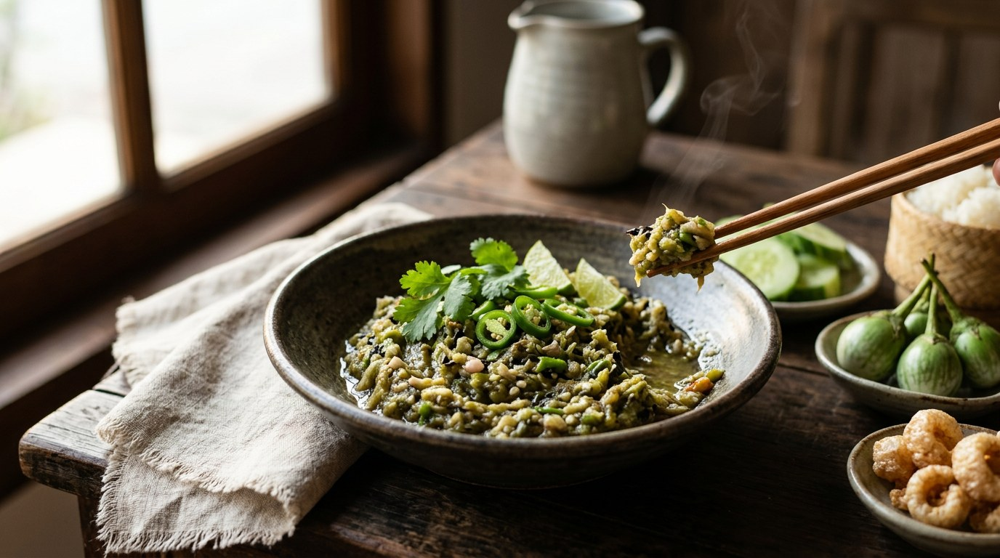

Young green chillies, shallots and garlic grilled until blistered black, peeled and pounded with salt — the youngest, simplest dip of the north.

น้ำพริกหนุ่ม takes its name from the chilli: phrik num, the "young" green chilli — big and mild, smaller than the phrik yuak, also called phrik hom or phrik on in different markets. Wongnai's pitch is almost a non-recipe: grill three things, peel them, pound them. No frying, no paste-building, nothing but fire and salt between the garden and the bowl.
And it's the base of everything else, as TrueID's northern-born author explains: northerners keep a batch in the fridge and take it to the fields with vegetables picked on the way. Re-pound the same dip with crab paste and it becomes nam phrik nam pu; with fish it becomes nam phrik pla; with meat, nam phrik jin. The plain version is the mother recipe of the whole family — which is why the sources argue hardest about what goes in it.
The craft is all in the fire. The chillies are grilled over a low flame until the skin blisters and chars — that char is the smoke that carries the whole dip — then peeled, and only the soft insides are pounded. TrueID's traditional version is salted and nothing else; other cooks add lime and fish sauce, pla ra, or a roasted aubergine. The essentials never change: grilled chilli, grilled shallot, grilled garlic, salt, mortar.
| Thai | English | Amount |
|---|---|---|
| พริกหนุ่ม | Young green chillies (phrik num) | 15 |
| กระเทียมไทย | Thai garlic | 1 tbsp |
| หอมแดงไทย | Thai shallots | 10 |
| เกลือป่น | Salt | 1 tsp |
| พริกชี้ฟ้าเขียว | Green spur chillies | optional, for heat |
The lime version (Wongnai): 7 phrik num, 4 shallots, 10 garlic cloves, 1 tsp salt, 1½ tbsp fish sauce, 2 tbsp lime juice — plus a little sugar when seasoning. The pla ra version (Wongnai, user niumo): 15 chillies, 9 shallots, a head of garlic, ¼ tsp salt, 1 tbsp pla ra, bird's eye chillies if the num runs mild. The aubergine version (TrueID): add a whole Thai aubergine, grilled and peeled alongside the chillies.
Salt only, or the full dressing. TrueID's traditional cup is salted and nothing else; Wongnai's basic version — and its Kapook twin — adds 1½ tbsp fish sauce and 2 tbsp lime juice, a central-Thai tartness on top of the smoke; niumo's recipe drops the salt to ¼ tsp and pours in a spoon of pla ra. Three seasoning schools, same three grilled ingredients.
Aubergine or not. TrueID's northern-born author makes a roasted Thai aubergine a core ingredient, pricked and grilled beside the chillies; แม่ซี's traditional version offers half a roasted aubergine as an optional sweetener only; the other four sources skip it entirely.
Fire versus pan. niumo insists the chillies and shallots be fire-grilled — charcoal is even better — because pan-roasting loses fragrance (garlic, he concedes, can take the pan). Wongnai's 100-gram version dry-roasts everything in a covered wok and is perfectly happy with the result.
Fine versus coarse. Wongnai pounds until fine; TrueID's traditional version says coarse on purpose. niumo has a whole order of operations: bird's eye chillies and garlic first, shallots second, the phrik num last, so each ingredient keeps its own texture.
To peel or not to peel. Almost every source peels the blackened skins before pounding. The 100-gram version doesn't mention peeling at all — the char goes straight into the mortar.
This recipe is translated from the following Thai-language sources. Where they disagree, we've said so.
1. TrueID — "ลำแต๊ ! สูตร น้ำพริกหนุ่ม อร่อยทำง่าย น้ำพริกเมืองเหนือ สูตรดั้งเดิม" from แม่ซี น้องมดดี้ channel (the recipe used here) — food.trueid.net
2. Wongnai — "วิธีทำ 'น้ำพริกหนุ่ม' เมนูอาหารเหนือ ทำง่ายแถมลำแต้ ๆ" (the lime and fish sauce version) — wongnai.com
3. Wongnai — "วิธีทำเมนู 'น้ำพริกหนุ่ม' เด็ดเหมือนไปกินที่เชียงใหม่!" (the 100-gram pan-roast version) — wongnai.com
4. TrueID — "สูตรเด็ดอาหารเหนือ : น้ำพริกหนุ่ม" (the aubergine version, by a northern-born author) — food.trueid.net
5. Wongnai (user niumo) — "สูตร น้ำพริกหนุ่ม พร้อมวิธีทำโดย niumo" (the pla ra version with the pounding order) — wongnai.com
6. Kapook — "รวมสูตรน้ำพริกเจ รสจัดจ้าน กินกับอะไรก็อร่อย" (the 'je' version — which still uses fish sauce) — cooking.kapook.com